Data de Lançamento: 2 de outubro de 2001
Descrição: Barbie estrela como Clara Drosselmayer, que recebe um quebra-nozes de sua tia, onde o mesmo ganha vida. Juntos os dois embarcam em uma aventura em busca de quebrar o feitiço feito pelo Rei Rato.
Barbie em Rapunzel
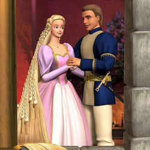
Data de lançamento: 1 de outubro de 2002
A boneca Barbie vive Rapunzel, uma jovem de longos e lindos cabelos que é mantida prisioneira na torre de um castelo pela poderosa bruxa Gothel. A descoberta de um pincel mágico trará grandes revelações para a heroína e mudará seu destino.
Barbie em O Lago dos Cisneis
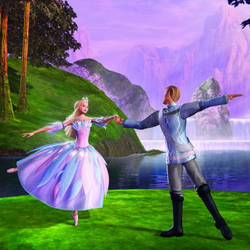
Data de lançamento: 30 de setembro de 2003
Barbie faz Odette, filha do padeiro que segue o unicórnio até a floresta encantada. Mas é transformada em cisne pelo feiticeiro Rodrigo. A fada rainha consegue amenizar o feitiço, fazendo com que Odette seja humana à noite e Cisne de dia.
Barbie em A Princesa e a Pebleia
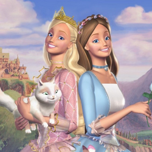
Data de lançamento: 28 de setembro de 2004
Uma plebeia, moradora de um vilarejo, é muito parecida com a princesa do reino. Os destinos das duas se cruzam quando a princesa é sequestrada, e a moça humilde usa sua incrível semelhança com ela para tentar salvar das mãos do vilão.
Barbie em A Magia de Aladus
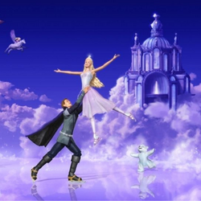
Data de Lançamento: 30 de setembro de 2005
Ao completar 17 anos, a princesa Anika é pedida em casamento por um bruxo malvado e, diante de sua recusa, ele transforma os pais da moça e todos os súditos do reino em estátuas de gelo. Um cavalo alado aparece para ajudá-la a quebrar o feitiço.
Barbie em As 12 Princesas Bailarinas
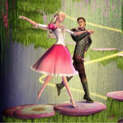
Data de lançamento: 19 de setembro de 2006
Genevieve e suas irmãs adoram dançar.Como são impedidas pela Duquesa Rowena, as princesas bailarinas descobrem um mundo mágico onde podem dançar.Porém, alguns acontecimentos as levam a tentar salvar a vida do pai.
Barbie em A princesa da Ilha
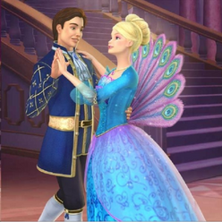
Data de lançamento: 18 de setembro de 2007
Depois de sobreviver a um naufrágio, a pequena princesa Rosella cresce em uma ilha deserta, onde é acolhida e criada por uma família de animais. Dez anos depois, o príncipe Antonio descobre a ilha e convida Rosella para acompanhá-lo até o seu reino.
Barbie em O castelo e diamantes
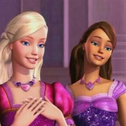
Data de lançamento: 9 de setembro de 2008
Liana e Alexa saem da sua cabana humilde para vender flores na vila e acabam conhecendo Melody, a guardiã do Castelo de Diamante. As duas decidem ajudá-la a impedir que a chave do castelo seja roubada por Lídia, uma musa egoísta.
Barbie em As três mosqueteiras
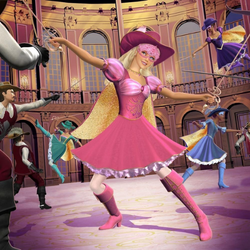
Data de lançamento: 15 de setembro de 2009
Corinne treina em segredo para se tornar uma mosqueteira. Quando chega a hora de proteger o príncipe e a família real de um plano maligno, ela precisa da ajuda dos outros empregados do palácio.
Barbie em Vida de sereia
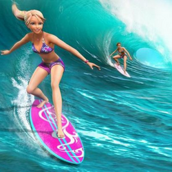
Data de lançamento: 2 de março de 2010
Barbie é uma campeã de surfe que vive com sua família em Malibu. Um dia, ela descobre um segredo de família: ela é uma sereia. Sua mãe, a rainha de Oceana, está em perigo e ela parte numa grande aventura no fundo do mar para salvá-la.
Barbie em Moda e Magia
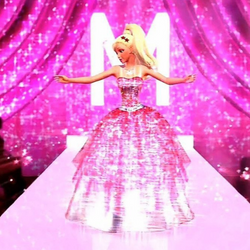
Data de lançamento: 14 de setembro de 2010
Em um conto de fadas fashion, Barbie viaja a Paris para salvar o ateliê de moda da sua tia, que está prestes a ser fechado.
Barbie em Vida de sereia 2
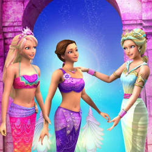
Data de lançamento: 2 de março de 2010
Barbie é uma campeã de surfe que vive com sua família em Malibu. Um dia, ela descobre um segredo de família: ela é uma sereia. Sua mãe, a rainha de Oceana, está em perigo e ela parte numa grande aventura no fundo do mar para salvá-la.
Barbie em O segredo das fadas
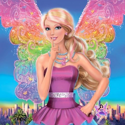
Data de lançamento: 15 de março de 2011
Mundos mágicos, fadas e cavalos voadores são alguns dos elementos encontrados neste filme da Barbie. Ela precisa viajar a um mundo encantado para salvar Ken. Nesta aventura, serão revelados segredos e algumas amizades serão testadas.
Barbie em Escolas de princesas
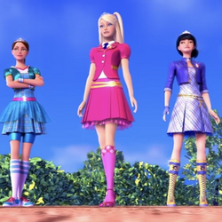
Data de lançamento: 15 de março de 2011
Blair é uma garota simples e órfã que foi sorteada para estudar na exclusiva Escola de Princesas. A escola é um lugar incrível, onde as meninas aprendem dança, etiqueta, arte e outras habilidades indispensáveis a uma princesa.
Barbie em A princesa e a Popstar
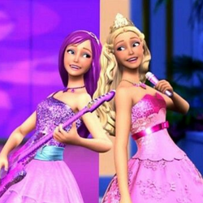
Data de lançamento: 11 de setembro de 2012
Keira é uma estrela pop mundialmente conhecida. Tori é a princesa de Meribella e fã de Keira. Keira está em crise com o estrelato, e Tori sonha com a vida de estrela pop. As duas resolvem trocar de vida, mas as coisas não são assim tão fáceis.
Barbie em As Sapatilhas Mágicas
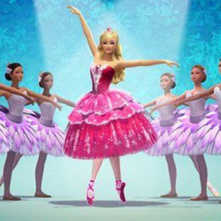
Data de lançamento: fevereiro de 2013
Kristyn e Hailey vão parar em um mundo mágico do balé dominado pela diabólica Rainha das Neves. As duas bailarinas dançam seus balés favoritos para derrotar a rainha e realizar seus sonhos.